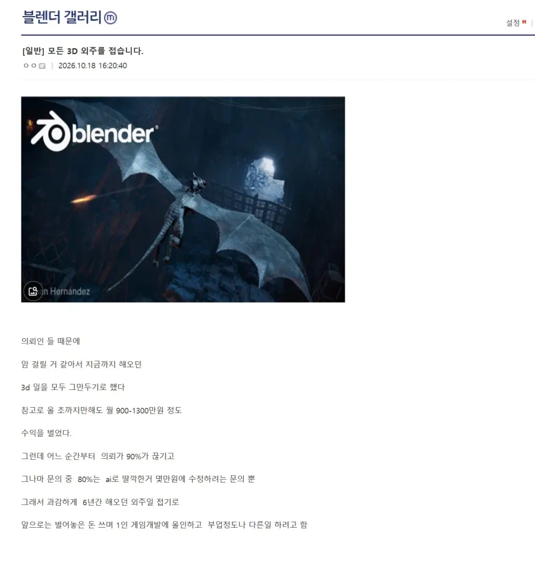
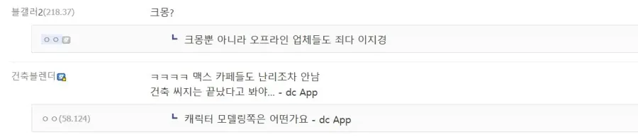
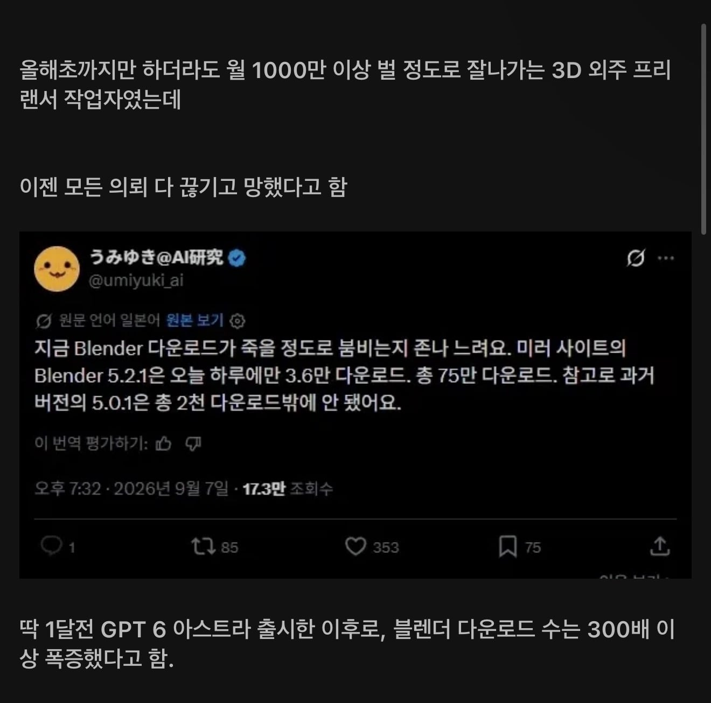
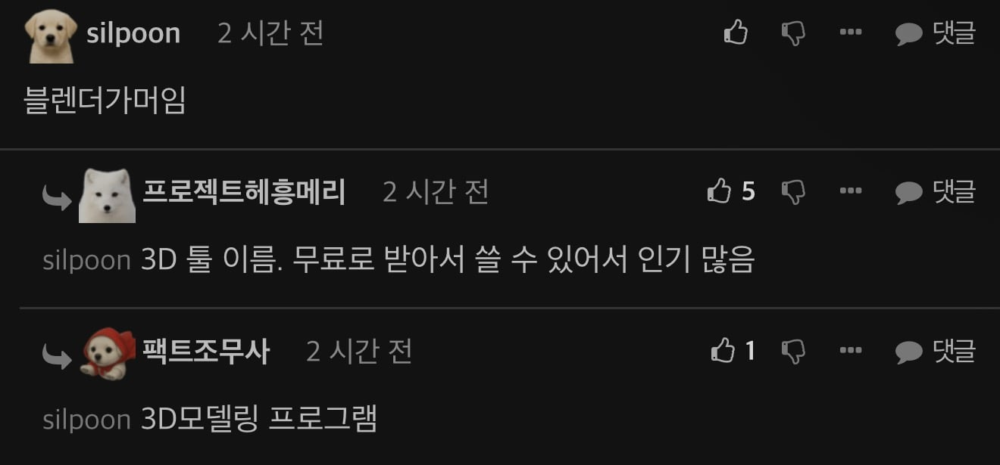

ㅊㅊ
https://m.fmkorea.com/best/10462843566
댜 딸깍의 시대가 도래했다




ㅊㅊ
https://m.fmkorea.com/best/10462843566
댜 딸깍의 시대가 도래했다
? 좀알고 뽑아야지 진짜 딸깍으로 하네? 양심 ㅇㄷ?
싸게 공급하면됨.
나도 ai 섞어쓰면서 다른업체보다 싸게 공급중임.
이것도 왠지 얼마못갈거 같지만..
이런 패턴인 거 같음.
1)A를 이제 막 하기 시작함. 타격 없이 귀여운 수준.
2)A를 적당히 하기 시작함. 초벌이 되면서 후작업만 요청하는 등 단가가 내려감. 하지만, 오히려 수요가 늘면서 업계는 잠시 호황.
3)A를 꽤 잘 하기 시작함. 일반 고객은 AI에 만족하고, 업계는 더 고급 수요를 위한 서비스로 발전.
대표적으로, 번역은 이런 흐름인 것 같더라.
ㅋㅋㅋ 만들어보면 알겠지만 저정도는 아니야....
ai로 블랜더 mcp 연결해서 써보면 극대노 고혈압 상승으로 사망할거 같음;;
로우 폴리 정도는 가능한데 조금만 퀄리티 높아지면 미쳐버릴거 같음
메시, 트리포 등등 ai? 이건 확실히 좋은데 세밀한 부분에서 매번 찐빠나서 파츠별로 나누고 나눈데 수정해야 그나마 덜함
애니메이션이랑 본 세팅 정도야 잘해주는데 이거 이외는;;;;
내년 하반기나 되야 이런말 나올듯
그치ㅇㅇㅇ윌스미스가 스파게티 손으로 먹던게 엇그제인데....무섭다 점점
ㅇㅇ 근데 코딩 쪽은 올해 초 ~ 아스트라 기점으로 공략되었다고 보는 중임
모델링이 생각보다 오래 걸릴만한게... 최적화 문제가 좀 많아서 내년 말이나 내후년 초 정도? 그때 혁신 일어날듯
그림 따이고, 코딩 따이고, 3d도 곧이고, 남은 건 소설이네
소설은 이미 따인거 아님?
핵심 컨셉만 잘 저장하면 잘 됨
제발좀 웹소 플랫폼에 딸깍질한 소설좀 그만 올렸으면 좋겠음
매일 출퇴근길에 대충 보는 사람들이야 그냥 보는지 몰라도 많이 보는 사람들은 느껴짐
신작에 딸깍소설 넘치니까 새로운 작품 발굴도 어렵고 짜증남
뭐 게임도 마찬가지임
ai 시대에 방법없음 ㅋㅋㅋㅋㅋ
아 이미 따였노ㅋㅋ
소설은 안 읽어서 몰랐네ㅋㅋㅋㅋ 시장 붕괴가 빠르다....
아트쪽은 근데 본업뛰면서 서로 눈감아주면서 외주뛰고 본업 지연시키는 새끼들도 많아서... 뭐라 마냥 안됬다 라고 하긴 또 그렇네
저정도 벌려면 프로젝트 단위로 외주를 끊임없이 해야 하는데 개씹구라임 개인한테 일이 그렇게 들어오지 않음
현직 종사자임? 그렇다면 카더라말고 자세한 내용증빙 알려줘
저정도 금액 규모면 게임업계 외주일 확률이 높은데 게임 업계는 보통 프로젝트 단위로 물량을 줘서 개인이 하면 진짜 뒤짐 그래서 팀단위로 일을 진행함 그리고 게임업계는 블랜더를 거의 사용 안함 몇몇 회사가 사용한다 카더라만 들어봄...단일 모델링 외주 한다 치면 3D 일러스트 전문 아트스트급 퀄리티를 내야 하는데 그정도 퀄리티 내는 사람이 일이 끊길만큼 지금 AI가 성능이 좋진 않음
저 썰 구라인거랑 별개로 트라이포나 메쉬로 러프하게 만들고 상세수정 ai시키면 은근 그럴싸한거나오더사
딸깍해서될거 같지 ㅋㅋㅋㅋ?
https://youtube.com/shorts/g881rJgrzCs?si=MznW1rhZgSqR3ukG
지금 돈 젤많이 젤 쏠쏠한 애들이 딸각된다고 유튜브 영상올리는애들 ㅋㅋ
저말듣고 진짠줄알고 댐비는 영포티들 조회수 달달함 ㅋㅋ
ㅋㅋ 아직 그정도아니야
아직 그정도 아닌데 문제는 내년에는 어느 정도인지가 무서운거지
인방쪽에서 디자인 일하는데 시장 외곽은 확실히 바짝 마름. 디자인 감각이 있거나 아무래도 상관없는 쪽은 ai로 로고까지 뽑아내니.
그정도아냐 ... 돌려보면 개 병신밤티같은거만나와 ...
애가 애니보다가 이거 갖고싶데서 3d ai로 딸깍하고 3d 프린트 회사에 파일만 던지고 뽑아봄 ㅋㅋㅋ
예전엔 엄두도 못낼일이었는데
내가 모델링 외주하는데 지금 AI수준으로 모델링 기업 외주 대체 안되는디
단순 디자인 딸깍딸깍뽑아내서 대충쓰는 영상업계랑 다름
AI는 사실상 3d 레퍼런스 뽑아서 참고하는 수준이고 예전보다 작업은 빨라졌어도
납품 할 정도의 가공하려면 모델러가 다시 만들어야하고 UV도 깔끔해야하고 텍스처도 다시작업해야됨
리깅하거나 색상별로 만들려면 와이어 흐름이나 텍스처 레이어도 중요하고 최적화문제도 있는데
갑자기 돈벌던게 AI나왔다고 통으로 날아갔다면
애초에 저품질로 작업해서 소비자한테 파는 애거나
모델링 수준 딱 AI만큼 해서 피규어 조형물하는 사람일듯
가장 중요한건 아무것도 모르는 사람이 딸깍으로 저 모델링을 뽑았다는게 중요한거다